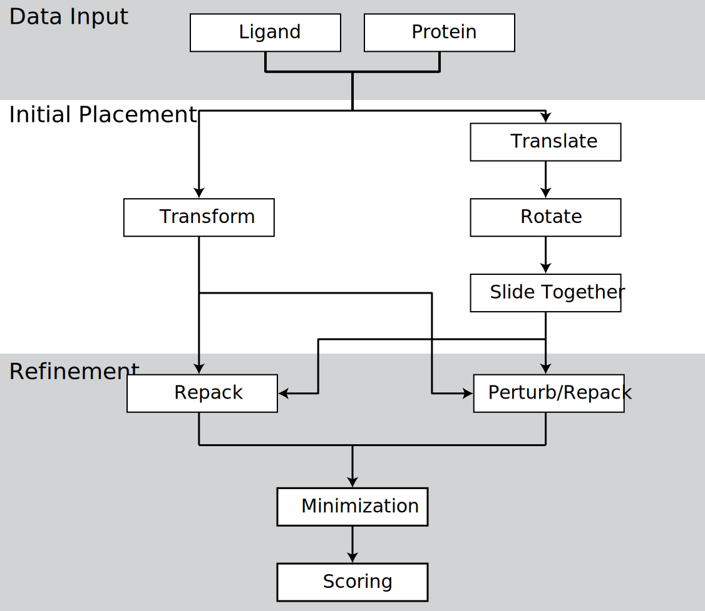
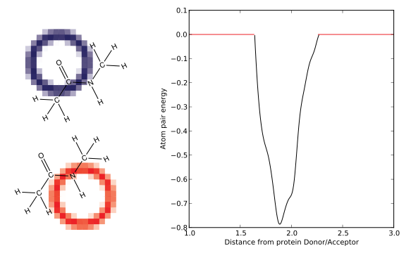
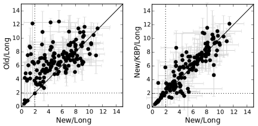

Development of Novel Methods for Computational Protein-Ligand Docking
Sam DeLuca
Overview of accomplishments
- Implemented a Knowledge Based Potential for protein surface design (DeLuca, et al. Biochemistry, 2011)
- 30-fold improvement of RosettaLigand speed, 15% improvement of scientific performance (DeLuca et al. PLoS ONE, under review)
- Implemented Neural networks combining Rosetta energy scores with ligand chemical information
- Implemented tools for preparing and managing large Rosetta datasets
- Generated/Analyzed models for High Throughput Screen of mGlur5 and RPA70
- Contributed to analysis of human germline antibody modeling (Willis et al, PLoS Comp. Bio., 2013)
- Contributed to analysis of protein-small molecule interface design project(Allison et al. J. Struct. Bio, 2013)
- Contributed to analysis of OSR1 drug candidates (
- Co-authored two reviews of RosettaLigand successes and best pratices (Kaufmann et al. Biochemistry, 2010), (Combs et al. Nature Protocols, 2013)
The Rosetta molecular modeling suite
- Originally a protein folding tool
- Expanded to protein design, protein-protein docking, protein ligand docking
- An extensible collection of tools for manipulating and scoring large molecules
Knowledge based potentials

- Statistically derived energy functions
- Capable of indirectly representing complex chemical properties
- Rosetta energy function is primary knowledge based
Protein Design
- Proteins can be engineered for specific purposes, or to be more efficient
- Protein surfaces have few direct contacts, are hard to model
- Natural proteins have evolved to prevent aggregation
A Rosetta energy term for protein surface design
- Knowledge Based Potential generated by () et al. based on propensity of amino acid burial
- Rosetta energy function optimization:
- Minimize overall score including
- Maintain overall amino acid profile
- New design performance metric based on PSSM score, rather than sequence recovery
The drug discovery pipeline

http://www.ncats.nih.gov/research/reengineering/process.html
Developing new drugs is challenging
- 1527 New Drug Entities 1940-2011
- Average of 21 NDEs/year
- New approved drugs cost ~$2.6B
Ligand docking is inconsistantly successful

- Most ligand docking tools work in some cases
Davis et al. (2009). Protein Science. doi:10.1002/pro.192
Improving RosettaLigand sampling
- Improved sampling yields improved scientific performance
- Improved speed allows for larger screening studies
- Groundwork laid for future development of RosettaLigand
- RosettaLigand is a global tool, useful across a wide of protein targets
A brief history of RosettaLigand
- Originally developed in 2006 (Meiler and Baker)
- Extended to allow protein flexibility in 2008 (Davis and Baker)
- Redesigned for modularity and multiple ligand support in 2012 (Davis and Baker)
RosettaLigand: Docking protocol
- Initial Placement
- Refinement
- Minimization
RosettaLigand: Initial placement scoring

RosettaLigand: Initial placement sampling
Grid energy function
- Translate — Translate ligand to a non-clashing position
- Rotate — Collect diverse rotations, select random non-clashing rotation
- Slide Together — Slide ligand toward center of protein till contact is made
RosettaLigand: Refinement and minimization
Rosetta energy function
- Alternating rounds of repacking and small ligand perturbation
- Minimization of entire complex
Improving RosettaLigand Sampling
Original RosettaLigand Initial Placement
New RosettaLigand Initial Placement

Improving RosettaLigand performance
- Profile code to identify rate limiting steps
- Single slowest step was internal to Cartesian coordinate conversion
- Rosetta performs rotations in internal coordinate space
- RosettaLigand initial placement grid is in cartesian space
Internal coordinate space
https://acbr12.wordpress.com/tag/peptide/
- Rosetta was optimized for:
- Large molecules
- Frequent internal coordinate changes, infrequent Cartesian lookup
- RosettaLigand initial placement: Cartesian lookup after every move
Optimizing ligand rotation computations
- C++ compilers optimize the code you write
- They're better at this than you are
- Sometimes they need help
- RosettaLigand stores atoms in a tree
- Atoms are not necessarily adjacent in memory
Optimizing residue storage for transformations
| x | y | z |
|---|---|---|
| 53.253 | 74.275 | 11.685 |
| 52.912 | 73.873 | 11.553 |
| ... | ... | ... |
- Contiguous array of residue coords
- Reference to original residue
- Internal ↔ Cartesian conversion only twice
- Compiler can properly optimize rotation operations
Comparing the new and old sampling methods
Protocol terminology
- TransRot — Original initial placement protocol
- Transform — New initial placement protocol
- MCM — Alternating rounds of perturbation and repacking refinement
- MIN — Minimization only refinement
Setting up a high quality benchmark
- Community Structure Activity Resource
- 43 Protein subset of CSAR, excluding
- co-factors
- metal ions
- structural waters
Transform improves sampling speed
Transform improves probability of success

Transform improves benchmark success rate
Transform improves benchmark success rate

GridManager: framework for managing scoring grids

Shape complementarity KBP
Hydrogen bonding KBP

3-D environment KBP
- Set of 20 KBPs
- Bins based on distance and 2 angles
- Distance — Query-Cβ
- Θ angle — Query-Cβ-Cα
- Φ angle — Hα-Cα-Cγ-Query
- Grid score is Sum of KBPs
Protocol terminology
- TransRot — Original initial placement protocol
- Transform — New initial placement protocol
- MCM — Alternating rounds of perturbation and repacking refinement
- MIN — Minimization only refinement
- 3-D — 3-D environment KBP
- 1-D — Shape + H-Bond KBPs
Q-Dock: A more challenging benchmark
- 154 Ligands-Comparative model pairs (1.4-24.0 Å RMSD)
- 10 low scoring relaxed models per complex
- Intrinsically more challenging than CSAR
New scoring grids do not improve success rate

Minimal difference in performance from grids

Transform improves symmetric ligand performance

3-D KBP may improve small ligand performance

No categorical difference between success and failure
ligand properties
No categorical difference between success and failure
ligand properties
No categorical difference between success and failure
protein properties

1-D KBPs for hand-docking in FoldIt
Future Directions
- RosettaLigand Improvements
- Investigate new sampling algorithms
- 2-D version of 3-D KBP grid
- "Deep sampling" to map energy function
- Implement Gasteiger atom-typing and orbital energy function
- Machine Learning Integration
- Establish larger training set
- Rigerous optimization of network parameters
- Implement less noisy descriptors
- Evaluate other ML methods
Summary
- Substantial improvements to RosettaLigand sampling quality
- 30-fold speed-up
- 15% increase in success rate over a range of proteins
- A new framework for grid scoring, and a range of KBP derived scoring grids